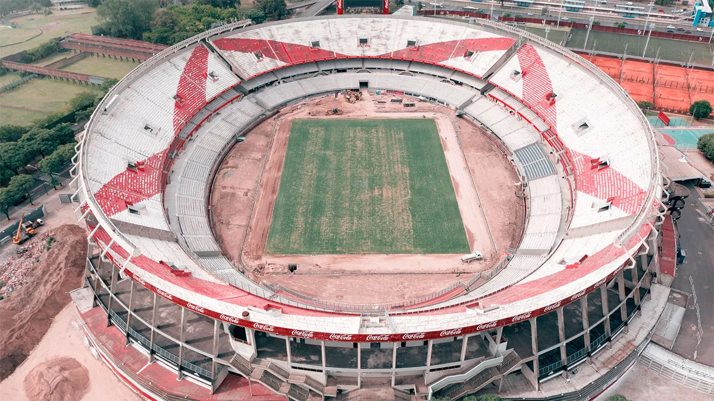

El club comenzó la remoción de materia orgánica de la superficie de juego. Esta operación es habitual en campos cosidos híbridos, ya que permite que las fibras artificiales vuelvan a ser visibles y sigan siendo efectivas en los años siguientes. La máquina utilizada para llevar a cabo esta tarea se llama Koro Field Topmaker, y lo que hace es despojar la superficie quitando toda la materia orgánica. Esto permite más espacio y luz para ayudar en la regeneración de la hierba bermuda. Con todo este proceso al campo le tomará entre cinco a seis semanas tener una cobertura completa. Por otro lado, se aplicarán alrededor de 40 toneladas de arena durante las próximas cuatro a seis semanas: esto ayudará a suavizar la superficie y también ayudará al establecimiento de la hierba, como así también a proporcionar fertilizante para acelerar el proceso. El suelo, que se bajó aproximadamente 1.9 metros, pasará a contar con un sistema híbrido (el 5 por ciento no será natural), con la intención de evitar los problemas que se generaban debido a la mala absorción del agua en días de tormentas. Este sistema de última generación es el mismo que utilizan campos de juego como el Camp Nou del Barcelona, Stamford Bridge del Chelsea, el San Mamés del Athletic de Bilbao o el Estadio Luzhniki, escenario que albergó 7 partidos durante el Mundial de Rusia 2018 (la final entre Francia y Croacia, por ejemplo). Con trabajos monitoreados por WIFI por la firma irlandesa SIS Grass (montaron una oficina en el club donde ingenieros y técnicos de todas partes del mundo supervisan lo que se está realizando en el Monumental), el suelo contará con 10 capas, entre las que sobresalen un suelo compactado, geotextil, membrana impermeable, doble capa de grava de distintos tamaños, arena, turba y el césped híbrido. El sistema de césped natural reforzado con tecnología de inyección de fibra permitirá que la cancha pueda tener más horas de uso que una tradicional. Además, la tecnología de aireado ayudará al desarrollo de las raíces y conducirá al crecimiento de un pasto más saludable y más fuerte que tendrá menores gastos de mantenimiento. Desde el club le informaron a Infobae que la técnica que se utilizó para instalar el césped en el Monumental se llama Row Planting, una técnica que se usa cuando tiene que crecer con rapidez y tiene que tener una edad avanzada el pasto y no tiene que ser nuevo. Además, posee un sistema de control de temperatura subterránea, el cual regula la temperatura de las raíces para mantener el césped en óptimas condiciones. Por ejemplo, ante un calor intenso refrigera las raíces enviando agua fría por las cañerías, mientras que ante un frío intenso se activa el sistema de calefacción.
Cambio de butacas: retiro de butacas existentes, impermeabilización, nuevas circulaciones y colocación de nuevas butacas rebatibles de primera, calidad según norma FIFA, en tribunas San Martín baja inferior, superior, media y hospitality; Belgrano baja superior, media, hospitality y palcos; Centenario media y palcos. Se completará un total de 17.157 nuevas butacas para esta fase. Las nuevas butacas rebatibles y antivandálicas que colocarán los de Núñez seguirán la tendencia de otros grandes escenarios del mundo, como la casa del Tottenham o el Santiago Bernabéu. Más allá de que el gris busca transmitir modernidad y amplitud, además supone un ahorro a mediano y largo plazo. Es que el rojo, según los estudios realizados por la empresa a cargo de las obras, se torna rosado en apenas cinco años. El gris, en cambio, perdura mucho más (aproximadamente el triple). Estos asientos modernos y confortables, de primer nivel mundial, cumplen con los estándares de calidad FIFA, son rebatibles, antivandálicos y están confeccionados en un material que los hacen resistentes a distintos entornos climáticos.De esta manera, se cumple con un pedido de los socios e hinchas de reemplazar las viejas butacas, instaladas para el Mundial de 1978. La elección del color tiene su base en una estrategia de marca que busca transmitir modernidad y amplitud, logrando un diseño y un estilo visual más limpio. Se recupera el gris del concreto original como materialidad fundamental del Mâs Monumental. El color gris de las nuevas butacas permitirá además un ahorro importante a mediano y largo plazo, ya que este color tiene una mayor vida útil en estadios descubiertos que se ven afectados directamente por los rayos UV. El nuevo manual de marca del Club incorpora el gris en diferentes tonalidades como color complementario al blanco, rojo y negro, los cuales representan a River Plate. Se toma uno de los tonos de gris como base para el diseño total del Mâs Monumental, siguiendo la tendencia de los estadios más importantes del mundo, como el Tottenham Hotspur Stadium, Estadio Santiago Bernabéu, SoFi Stadium, Allegiant Stadium, AT&T Stadium y Estadio Areia da Baixada, entre otros.
River Plate continúa trabajando en el Monumental del futuro para tener el estadio con mayor capacidad de Sudamérica, con lugar para 81.000 espectadores (57.722 plateas y 23.278 populares). Gracias a esta gran iniciativa, además, se ganará una cercanía al campo de juego e importantes mejoras en las visuales desde las tribunas bajas.El Club cuenta con el primer y único campo de juego con tecnología híbrida con sistemas de aireación y climatización del país. Con estas obras, el Mâs Monumental lucirá nuevas tribunas bajas inferiores, 180 palcos, 926 plateas hospitality, restaurant 24/7 y circulación 360° en palcos, tres nuevos niveles de estacionamiento y nuevo Instituto River, entre otras importantes innovaciones. En la primera fase de la segunda etapa de obra, que cuenta con más de 200 personas trabajando de lunes a sábado y 4000 metros cúbicos de hormigón volcado hasta el momento, se destacan los siguientes avances en cada tribuna. Fase 1 -Nuevas tribunas bajas inferiores: en Sívori, San Martín y Centenario. -Cambio de butacas: retiro de butacas existentes, impermeabilización, nuevas circulaciones y colocación de nuevas butacas rebatibles de primera, calidad según norma FIFA, en tribunas San Martín baja inferior, superior, media y hospitality; Belgrano baja superior, media, hospitality y palcos; Centenario media y palcos. Se completará un total de 17.157 nuevas butacas para esta fase. -Sector Prensa: nuevos pupitres en tribuna Belgrano media (247 puestos). -Nueva experiencia para días de partido: 30 palcos en Centenario media y un restaurant 24/7 de 700 metros cuadrados con vistas al barrio River y campo de juego, con nuevas circulaciones y revestimientos. -Nueva circulación y revestimientos en palcos: en tribuna Belgrano. -Nuevas cocheras: nuevo nivel de estacionamiento y acceso techado peatonal en planta baja hacia el Estadio. Se sumarán 227 cocheras. -Ampliación del Paddock San Martín: nuevos sanitarios y cocina con vistas al nuevo túnel único de salida de los equipos al campo de juego. Se pasará de 200 a 500 metros cuadrados. -Nuevo vestuario de árbitros. -Nuevo sector de control antidoping. -Ampliación del sector gastronómico en San Martín media: mejoras en la oferta gastronómica en los días de partido. -Nuevo sistema de audio en el Estadio. -Nuevo Departamento Médico: en planta baja de la tribuna Centenario. Fase 2 -Nueva tribuna baja inferior Belgrano. -Cambio de butacas: retiro de butacas existentes, impermeabilización, nuevas circulaciones y colocación de nuevas butacas rebatibles de primera calidad, según norma FIFA, en tribunas Belgrano baja inferior; Sívori media y palcos; San Martín, Belgrano, Centenario y Sívori altas. Se cambiará un total de 40.565 butacas, completando la totalidad del Estadio. -46 palcos en tribuna Sívori: nuevas circulaciones y revestimientos. -Ejecución de dos niveles más de estacionamiento: 402 nuevas cocheras, completando los cinco niveles de estacionamiento y nuevo puente peatonal en nivel superior, con conexión a nivel de palcos. Tendrá una capacidad final para 1141 automóviles. -Nueva zona mixta: en planta baja de la tribuna Belgrano. -Nuevo Instituto River.